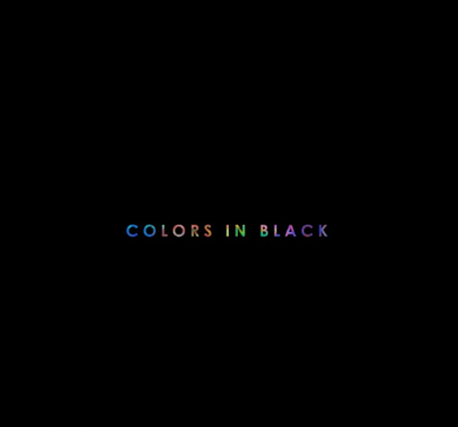
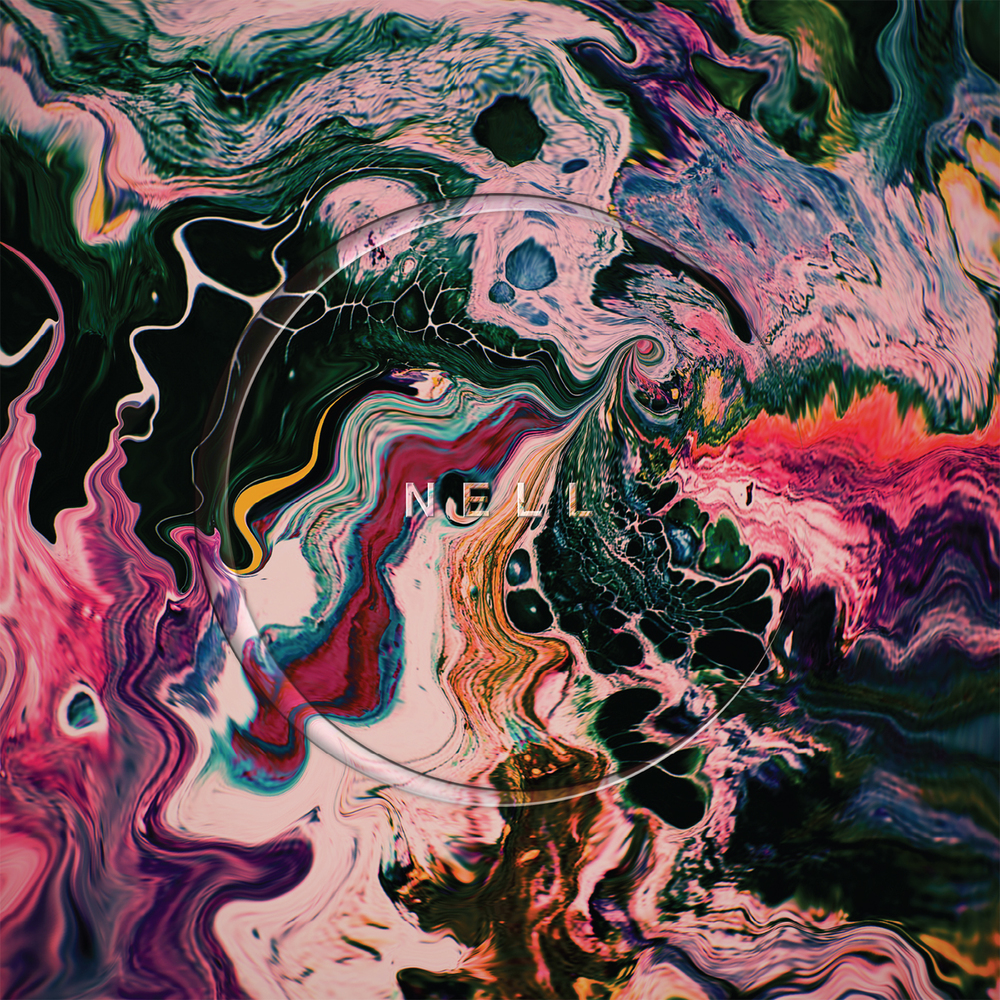
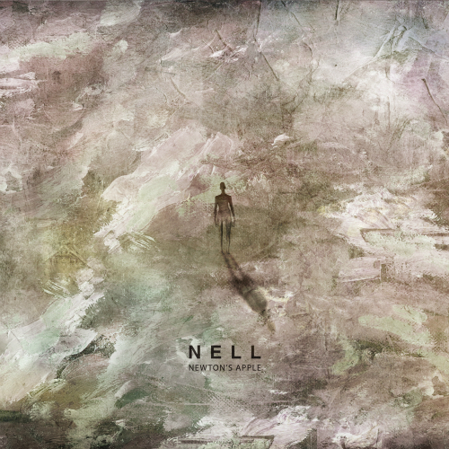
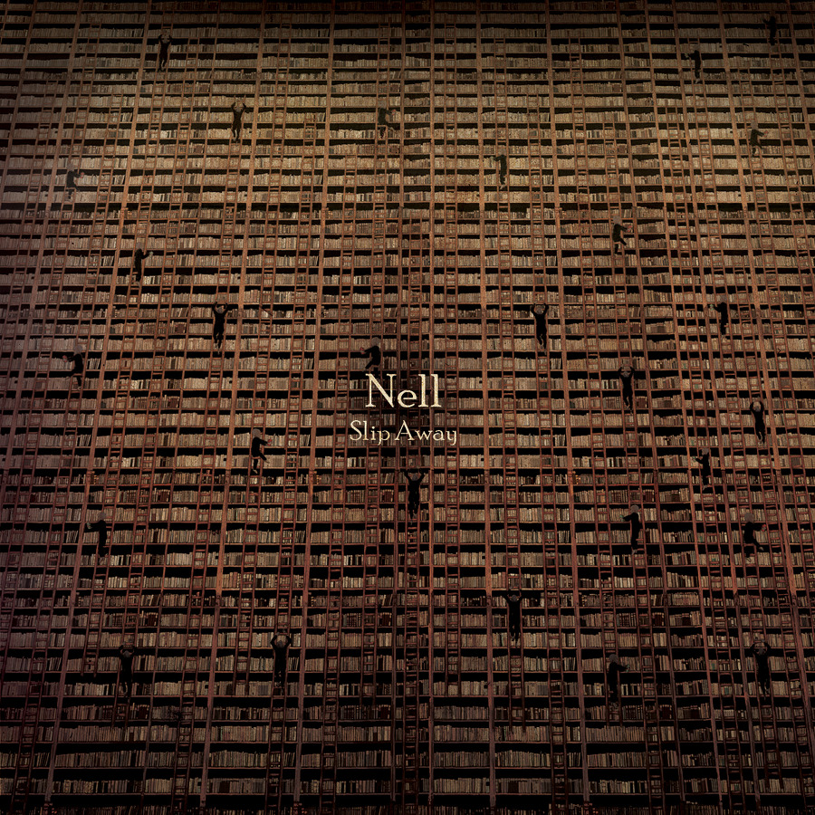
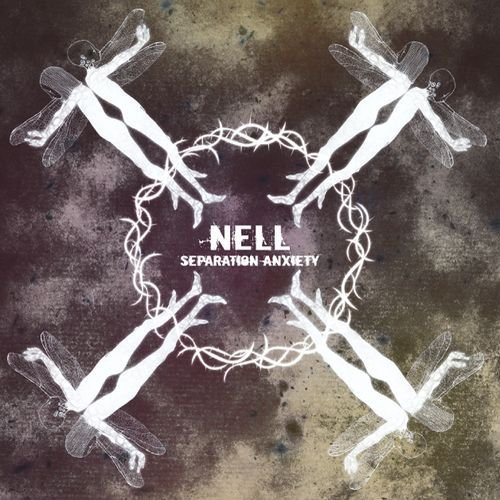
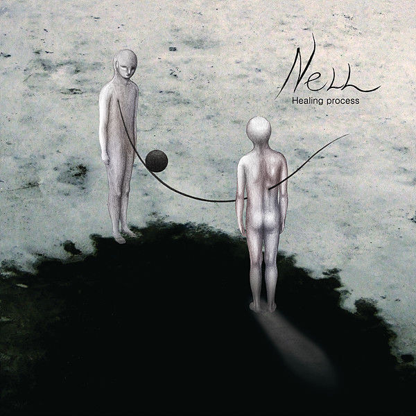
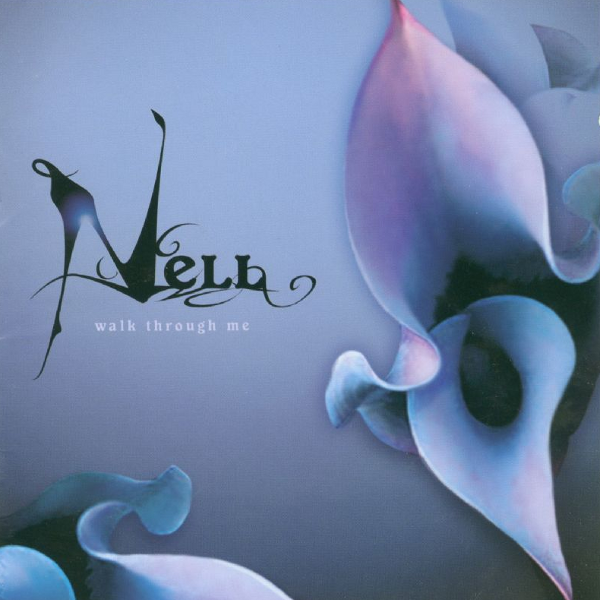
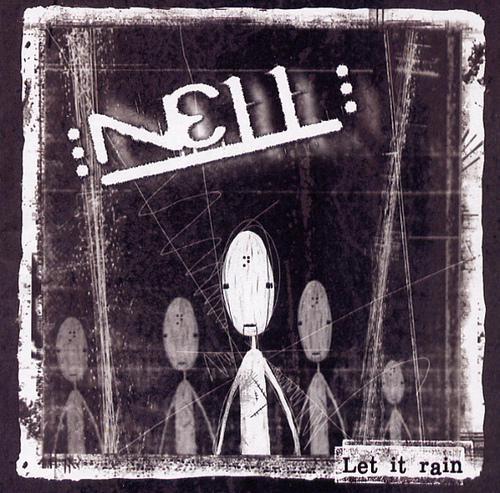

Taylous Page
menus
NELL
1999년에 결성된 대한민국의 모던 록밴드.
멤버는 김종완, 이재경, 이정훈, 정재원.
정식 멤버는 아니지만 2014년 들어 페스티벌이나 각종 공연에서
키보드 및 기타 세션으로 피아의 심지와 바드의 루빈이 함께 다니고 있다.
JavaScript
Front-end
Vue.js
Front-end
React
Front-end
Java
Programming Language
Nell's Music

오분 뒤에 봐
8집
Colors in Black
7집 C로부터 3년만에 선보이는 정규 8집 앨범이며 편곡 앨범인 '행복했으면 좋겠어'로부터는 약 1년만의 신보이다.

Dream catcher, 희망고문
7집
C
C는 대한민국의 밴드 넬의 정규7집 앨범이다. 발매 후 미러볼뮤직 인디 차트에 올라온 것을 보면 알 수 있듯이 기획사를 거치지 않고 자체적으로 발매한 앨범이기에 인디 앨범으로 분류되기도 한다.

지구가 태양을 네 번
6집
Newton's Apple
Newton's Apple은 대한민국의 밴드 넬의 정규 6집 앨범이다. 통칭 '사과앨범'이라고 불리기도 하는데 앨범명 발표 전부터 지어진 별칭이다. 중력 3부작을 마무리하는 앨범인 만큼 관심이 집중됐다는 증거 중 하나. 빌보드 선정 2014년 최고의 K-pop앨범 2위로 선정되기도 했다.

그리고, 남겨진 것들
5집
Slip Away
Slip Away는 대한민국의 밴드 넬의 정규 5집 앨범이다. 통칭 '슬립앨범'이라고 불리기도 한다. 앨범 커버는 책장에 사다리가 놓여 있고 수많은 사람들이 사다리에 매달려 있는 모습이다.

기억을 걷는 시간, Good Night
4집
Separation Anxiety
Separation Anxiety는 대한민국의 밴드 넬의 정규 4집 앨범이다. 타이틀은 '분리 불안'이라는 뜻이며 통칭 '세앵 앨범', '분리불안 앨범' 혹은 '잠자리 앨범'으로 불리기도 한다.

마음을 잃다.
3집
Healing Process
Healing Process는 대한민국의 밴드 넬의 정규 3집 앨범이다. 통칭 '힐링앨범' 또는 '힐프'로 부른다.

Thank You
2집
Walk Through Me
Walk Through Me는 대한민국 밴드 넬의 정규 2집 앨범이다. 통칭 '보라앨범' 혹은 '웍쓰루'로 부른다.

Stay
1집
Let it rain
Let it Rain은 대한민국 밴드 넬의 정규 1집 앨범이다. 통칭 '비앨범'으로 부른다.
데이터 분석/예측 로드맵
(데이터분석가/과학자 커리어 과정)
오분 뒤에 봐
8집
Colors in Black
7집 C로부터 3년만에 선보이는 정규 8집 앨범이며 편곡 앨범인 '행복했으면 좋겠어'로부터는 약 1년만의 신보이다.
오분 뒤에 봐
8집
Colors in Black
7집 C로부터 3년만에 선보이는 정규 8집 앨범이며 편곡 앨범인 '행복했으면 좋겠어'로부터는 약 1년만의 신보이다.